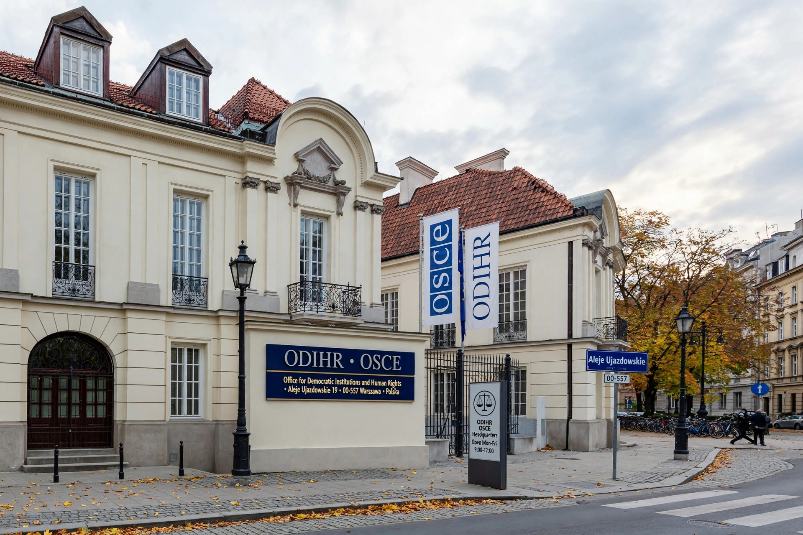

| Abbreviation | ODIHR |
|---|---|
| Formation | 1991 |
| Headquarters | Warsaw, Poland |
| Parent | OSCE |
The Office for Democratic Institutions and Human Rights (ODIHR) is the principal institution of the Organization for Security and Co-operation in Europe dealing with the human dimension of security. Based in Warsaw, it provides support and expertise to OSCE participating States and civil society to promote democracy, rule of law, human rights and tolerance.

ODIHR is best known for its election observation methodology, deploying long- and short-term observers and issuing assessments of elections across the OSCE area against international standards and the 1990 Copenhagen commitments.
The office works on democratization and legislative support, human rights monitoring, tolerance and non-discrimination including hate-crime reporting, Roma and Sinti issues, gender equality, and human rights education. It convenes the annual Human Dimension Implementation Meeting in Warsaw, one of Europe's largest human rights conferences.
Created in 1991 as the Office for Free Elections, it was renamed in 1992 as its mandate expanded.